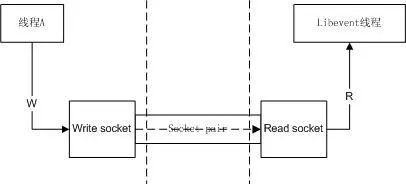
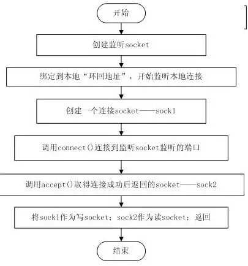
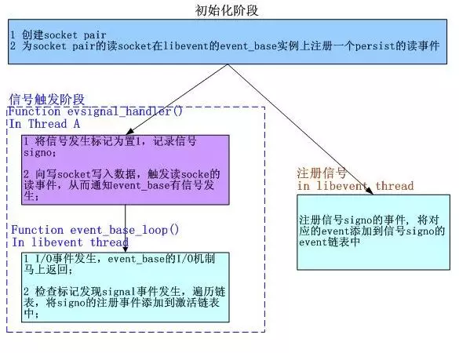

libevent源码深度剖析08
集成信号处理
现在我们已经了解了libevent的基本框架：事件管理框架和事件主循环。上节提到了libevent中I/O事件和Signal以及Timer事件的集成，这一节将分析如何将Signal集成到事件主循环的框架中。
1. 集成策略——使用socket pair
前一节已经做了足够多的介绍了，基本方法就是采用“消息机制”。在libevent中这是通过socket pair完成的，下面就来详细分析一下。 Socket pair就是一个socket对，包含两个socket，一个读socket，一个写socket。工作方式如下图所示：

创建一个socket pair并不是复杂的操作，可以参见下面的流程图，清晰起见，其中忽略了一些错误处理和检查。

Libevent提供了辅助函数evutil_socketpair()来创建一个socket pair，可以结合上面的创建流程来分析该函数。
2. 集成到事件主循环——通知event_base
Socket pair创建好了，可是libevent的事件主循环还是不知道Signal是否发生了啊，看来我们还差了最后一步，那就是：为socket pair的读socket在libevent的event_base实例上注册一个persist的读事件。 这样当向写socket写入数据时，读socket就会得到通知，触发读事件，从而event_base就能相应的得到通知了。 前面提到过，Libevent会在事件主循环中检查标记，来确定是否有触发的signal，如果标记被设置就处理这些signal，这段代码在各个具体的I/O机制中，以Epoll为例，在epoll_dispatch()函数中，代码片段如下：
res = epoll_wait(epollop->epfd, events, epollop->nevents, timeout);
if (res == -1) {
if (errno != EINTR) {
event_warn("epoll_wait");
return (-1);
}
evsignal_process(base);// 处理signal事件
return (0);
} else if (base->sig.evsignal_caught) {
evsignal_process(base);// 处理signal事件
}
完整的处理框架如下所示：

注1：libevent中，初始化阶段并不注册读socket的读事件，而是在注册信号阶段才会测试并注册； 注2：libevent中，检查I/O事件是在各系统I/O机制的dispatch()函数中完成的，该dispatch()函数在event_base_loop()函数中被调用；
3. evsignal_info结构体
libevent中Signal事件的管理是通过结构体evsignal_info完成的，结构体位于evsignal.h文件中，定义如下：
struct evsignal_info {
struct event ev_signal;
int ev_signal_pair[2];
int ev_signal_added;
volatile sig_atomic_t evsignal_caught;
struct event_list evsigevents[NSIG];
sig_atomic_t evsigcaught[NSIG];
#ifdef HAVE_SIGACTION
struct sigaction **sh_old;
#else
ev_sighandler_t **sh_old;
#endif
int sh_old_max;
};
下面详细介绍一下个字段的含义和作用： 1）ev_signal， 为socket pair的读socket向event_base注册读事件时使用的event结构体； 2）ev_signal_pair，socket pair对，作用见第一节的介绍； 3）ev_signal_added，记录ev_signal事件是否已经注册了； 4）evsignal_caught，是否有信号发生的标记；是volatile类型，因为它会在另外的线程中被修改； 5）evsigvents[NSIG]，数组，evsigevents[signo]表示注册到信号signo的事件链表； 6）evsigcaught[NSIG]，具体记录每个信号触发的次数，evsigcaught[signo]是记录信号signo被触发的次数； 7）sh_old记录了原来的signal处理函数指针，当信号signo注册的event被清空时，需要重新设置其处理函数； evsignal_info的初始化包括，创建socket pair，设置ev_signal事件（但并没有注册，而是等到有信号注册时才检查并注册），并将所有标记置零，初始化信号的注册事件链表指针等。
4. 注册、注销signal事件
注册signal事件是通过evsignal_add(struct event *ev)函数完成的，libevent对所有的信号注册同一个处理函数evsignal_handler()，该函数将在下一段介绍，注册过程如下： 1 取得ev要注册到的信号signo； 2 如果信号signo未被注册，那么就为signo注册信号处理函数evsignal_handler()； 3 如果事件ev_signal还没哟注册，就注册ev_signal事件； 4 将事件ev添加到signo的event链表中； 从signo上注销一个已注册的signal事件就更简单了，直接从其已注册事件的链表中移除即可。如果事件链表已空，那么就恢复旧的处理函数； 下面的讲解都以signal()函数为例，sigaction()函数的处理和signal()相似。 处理函数evsignal_handler()函数做的事情很简单，就是记录信号的发生次数，并通知event_base有信号触发，需要处理：
static void evsignal_handler(int sig){
int save_errno = errno; // 不覆盖原来的错误代码
if (evsignal_base == NULL) {
event_warn("%s: received signal %d, but have no base configured", __func__, sig);
return;
}
// 记录信号sig的触发次数，并设置event触发标记
evsignal_base->sig.evsigcaught[sig]++;
evsignal_base->sig.evsignal_caught = 1;
#ifndef HAVE_SIGACTION
signal(sig, evsignal_handler); // 重新注册信号
#endif
// 向写socket写一个字节数据，触发event_base的I/O事件，从而通知其有信号触发，需要处理
send(evsignal_base->sig.ev_signal_pair[0], "a", 1, 0);
errno = save_errno; // 错误代码
}
5. 小节
本节介绍了libevent对signal事件的具体处理框架，包括事件注册、删除和socket pair通知机制，以及是如何将Signal事件集成到事件主循环之中的。